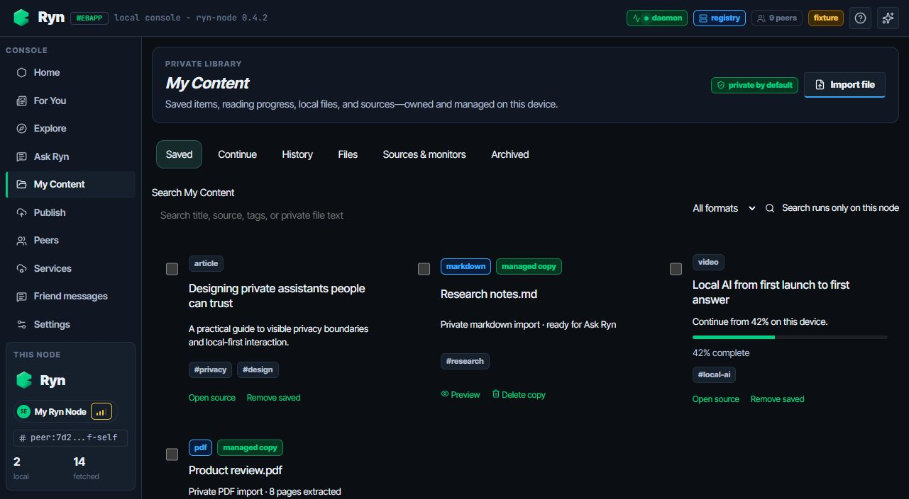
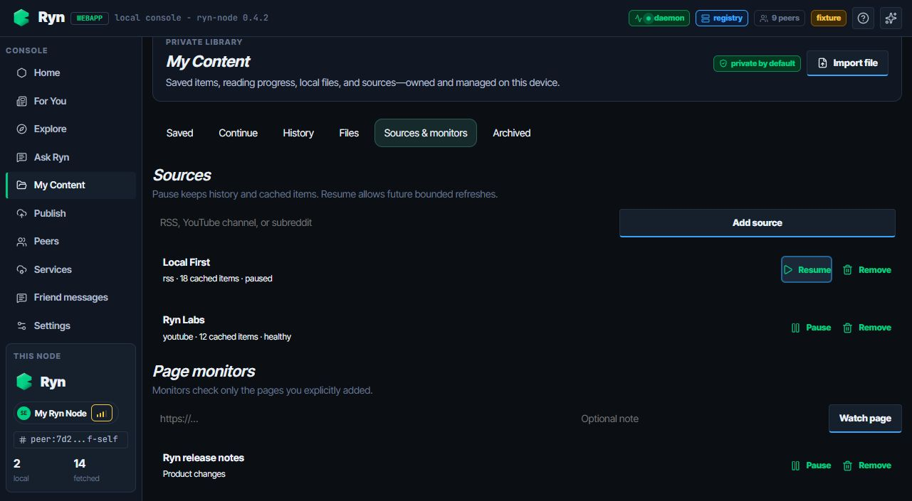
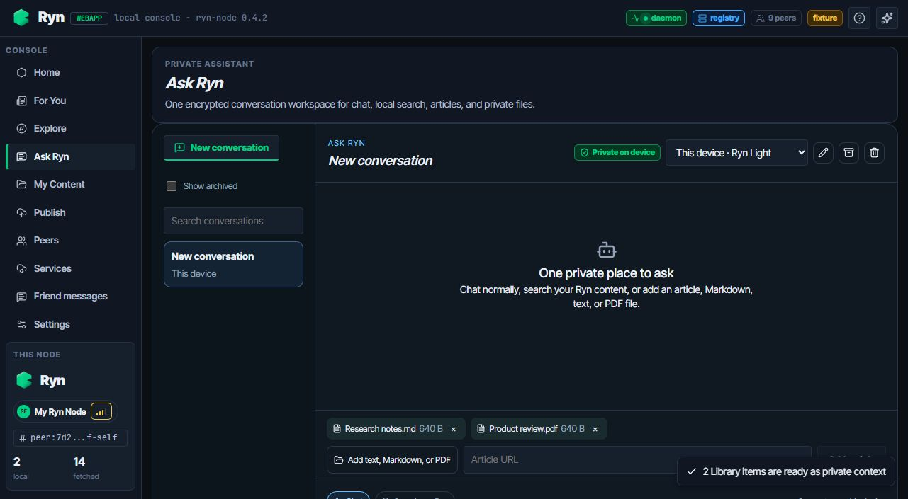

DEV-04 · My Content
Annotated UI acceptance · saved content, managed files, source control, and Ask Ryn handoff
LOCAL UI VERIFIED · 2026-09-04

121
One private librarySaved, continue, history, files, sources and archive are one predictable workspace. Search explicitly stays on this node.
34
2
Useful state at a glanceCards distinguish managed copies, formats, tags, completion and resumable progress without exposing local paths or body text.

563
Pause is not deleteA paused source keeps its 18 cached items and history. Add/remove and page-monitor controls are available in the same view.

784
Bounded handoff to Ask RynTwo opaque Library selections become named private contexts. The compute badge confirms processing remains on this device.
Raw evidence also includes the private managed-file preview and full-page source controls. No production deployment was performed.